HTML-код
<a href="#css-showcase">CSS</a>
<button type="submit">Зберегти завдання</button>
<textarea id="comment" name="comment"></textarea>HTML-документ, семантична розмітка, GitHub, бізнес-логіка WEB-застосунку, CSS та функціональне застосування JavaScript.
| Виконав | Єрещенко М.О., студент групи ІП-зп51 |
|---|---|
| Тема ЛР №1.1 | HTML-документ, семантична структура сторінки, GitHub, репозиторії та бізнес-логіка власного WEB-застосунку. |
| Мета ЛР №1.1 | Отримати практичні навички роботи з HTML-документом, семантичною версткою, таблицями, зображеннями, списками, формами, посиланнями та описом логіки WEB-застосунку. |
| Назва власного WEB-застосунку | StudyTask - навчальний планувальник завдань студента. |
| Локальне розташування WEB-застосунку | IP-zp51_appWEB-YereshchenkoMO-FIOT-2025/index.html |
| Репозиторій WEB-застосунку | додати після публікації на GitHub Назва: IP-zp51_appWEB-YereshchenkoMO-FIOT-2025 |
| Жива сторінка WEB-застосунку | додати після GitHub Pages Локальна сторінка доступна за посиланням вище. |
| Репозиторій звітного HTML-документа | додати після публікації на GitHub Назва: IP-zp51_appRECORD-YereshchenkoMO-FIOT-2025 |
| Жива сторінка звітного HTML-документа | додати після GitHub Pages Поточний файл: index.html у цій папці. |
Тема застосунку - планування навчальних завдань студента за дисциплінами, дедлайнами, пріоритетами та статусом виконання.
Мета створення StudyTask - надати студенту простий інструмент для контролю навчального навантаження, щоб своєчасно бачити актуальні лабораторні роботи, етапи виконання та найближчі дедлайни.
Предметна область застосунку охоплює індивідуальне планування навчання. Користувачем є студент, який створює завдання, прив'язує їх до дисциплін, визначає дедлайн, пріоритет і статус виконання.
Основний процес: студент додає завдання, система показує його у таблиці, виділяє найближчі дедлайни та допомагає контролювати прогрес виконання. Детальний опис винесено на сторінку business-logic.html.
| Тип вимог | Опис |
|---|---|
| Функціональні | Додавання навчального завдання через форму; відображення задач у таблиці; збереження дисципліни, дедлайну, статусу та пріоритету; перехід на сторінку бізнес-логіки; показ короткої статистики тижня. |
| Нефункціональні | Семантична HTML-структура; адаптивність для різних екранів; доступні поля форми з label; зрозуміла навігація; швидке завантаження сторінок; мінімізація зайвих персональних даних. |
Головна сторінка побудована за принципами семантичної верстки. Використано елементи header, nav, main, section, article, aside, figure, figcaption та footer.
<header class="site-header">
<a class="brand" href="index.html">StudyTask</a>
<nav class="site-nav" aria-label="Основна навігація">
<a href="#schedule">Розклад</a>
<a href="#features">Можливості</a>
<a href="#request">Додати завдання</a>
<a href="business-logic.html">Бізнес-логіка</a>
</nav>
</header>
<main>
<section class="hero" aria-labelledby="hero-title">...</section>
<section id="schedule" class="panel">...</section>
<section id="features" class="panel">...</section>
<section id="request" class="panel">...</section>
</main>
Для таблиць застосовують теги table, caption, thead, tbody, tr, th і td. Атрибут scope допомагає пов'язати заголовок із рядком або стовпцем, а colspan та rowspan об'єднують комірки.
<table class="schedule-table">
<caption>Поточний навчальний тиждень студента</caption>
<thead>
<tr>
<th scope="col">Дисципліна</th>
<th scope="col">Завдання</th>
<th scope="col">Дедлайн</th>
<th scope="col">Статус</th>
<th scope="col">Пріоритет</th>
</tr>
</thead>
<tbody>
<tr>
<td>Основи клієнтських розробок</td>
<td>ЛР №1: семантична HTML-сторінка</td>
<td><time datetime="2026-06-10">10.06.2026</time></td>
<td><span class="tag hot">у роботі</span></td>
<td>Високий</td>
</tr>
</tbody>
</table>
Для вставлення зображення використовується тег img. Обов'язковим для доступності є атрибут alt, який описує вміст зображення. Атрибути src, width і height задають шлях до файлу та його розміри.
<figure class="hero-media">
<img src="assets/study-dashboard.svg"
alt="Ілюстрація панелі StudyTask з курсами, дедлайнами і планом занять"
width="960"
height="560">
<figcaption>Приклад майбутньої панелі контролю навчального навантаження.</figcaption>
</figure>
Маркірований список створюється тегом ul, нумерований - тегом ol, а кожен пункт списку розміщується у li. Атрибут type може змінювати тип маркера або нумерації.
<ul>
<li>додавання навчальних завдань;</li>
<li>перегляд таблиці дедлайнів;</li>
<li>фільтрація задач за дисципліною та статусом;</li>
</ul>
<ol>
<li>студент відкриває панель StudyTask;</li>
<li>переглядає актуальні дедлайни;</li>
<li>додає нове завдання через форму;</li>
</ol>
Типова структура містить doctype, кореневий елемент html, службову частину head з метаданими та видиму частину body з контентом сторінки.
Тег - це елемент мови HTML, який позначає структуру або призначення частини документа. Більшість тегів мають відкривальну і закривальну форму, наприклад <p>...</p>.
Основні теги: table, caption, thead, tbody, tfoot, tr, th, td, colgroup, col.
Найчастіше використовують img, figure, figcaption, picture і source.
Для списків використовують ul, ol, li, а для списків визначень - dl, dt, dd.
Таблиці описують через заголовок caption, рядки tr, клітинки td, заголовкові клітинки th, групи рядків thead, tbody, tfoot, атрибути scope, colspan і rowspan.
У лабораторній роботі №1 створено HTML-структуру власного WEB-застосунку StudyTask і звітний HTML-документ. На головній сторінці застосовано семантичні теги, заголовки різних рівнів, зображення, таблицю, маркірований і нумерований списки, форму та посилання на сторінку з бізнес-логікою. У звіті наведено тему, мету, опис предметної області, вимоги, приклади HTML-коду, теоретичні відомості та відповіді на контрольні питання.
Тема: стильове оформлення елементів в HTML-документах. Каскадні таблиці стилів. Селектори тегу, класу та ідентифікатора.
| Мета | Придбати практичні навички роботи з CSS-селекторами, ідентифікаторами, списками, властивостями кольору і фону, зовнішніми та внутрішніми відступами, контурами, таблицями й оформленням текстових елементів. |
|---|---|
| WEB-застосунок | StudyTask: CSS-showcase |
| Резюме | Локальна HTML-сторінка резюме |
| GitHub/GitHub Pages | додати після публікації Віддалені репозиторії та live-посилання ще не створювалися. |
У роботі використано зовнішній спосіб підключення CSS: окремий файл стилів приєднано через тег link у частині head. Такий підхід зручний для повторного використання стилів і підтримки структури проєкту.
<link rel="stylesheet" href="assets/app.css">Також у CSS застосовано каскадування: загальні правила задаються для тегів, а точніші правила класів, ідентифікаторів та комбінованих селекторів уточнюють оформлення конкретних блоків.
Селектор тегу застосовується до всіх HTML-елементів певного типу. У WEB-застосунку він використаний для посилань, кнопок, полів форми, таблиць та інших базових елементів.
<a href="#css-showcase">CSS</a>
<button type="submit">Зберегти завдання</button>
<textarea id="comment" name="comment"></textarea>a {
color: var(--brand-2);
}
button {
border: 1px solid var(--brand);
color: #ffffff;
background: var(--brand);
}
textarea {
min-height: 104px;
resize: vertical;
}
Клас використовується для повторного оформлення групи елементів. У блоці CSS-showcase картки мають спільний клас selector-card, а окремий варіант оформлення задається класом accent-card.
<article class="selector-card">
<h3>Селектор тегу</h3>
<p>...</p>
</article>
<article class="selector-card accent-card">
<h3>Селектор класу</h3>
<p>...</p>
</article>.selector-card {
padding: 18px;
border: 2px solid #d4e1dd;
border-radius: 8px;
background: #ffffff;
}
.accent-card {
background: #fff6ee;
border-color: #efc7a9;
}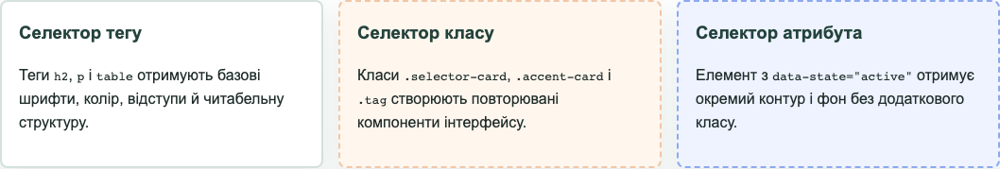
selector-card і accent-card.
Ідентифікатор задає унікальний елемент сторінки. У застосунку секція CSS у StudyTask має ідентифікатор css-showcase, який використовується для навігації та окремого фону.
<section id="css-showcase" class="panel css-lab-panel">
<h2 id="css-title">CSS у StudyTask</h2>
</section>#css-showcase {
background: linear-gradient(180deg, #ffffff 0%, #f1f7f4 100%);
}
#css-showcase > h2 {
color: var(--brand);
text-transform: uppercase;
}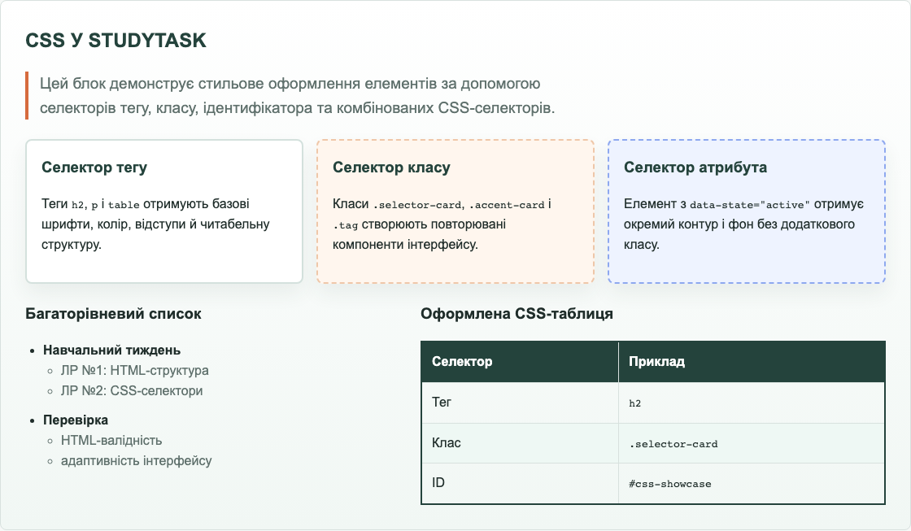
#css-showcase.Додатково використано універсальний селектор, дочірній селектор, сусідній селектор і селектор атрибута. Вони допомагають точніше задавати правила без зайвих класів.
* {
box-sizing: border-box;
}
.selector-board > article {
min-height: 168px;
}
.selector-card + .selector-card {
border-style: dashed;
}
.selector-card[data-state="active"] {
background: #eef3ff;
border-color: #8ea8ef;
}
input[required],
textarea[placeholder] {
border-color: var(--brand-2);
}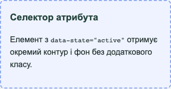
У застосунку використано системний шрифт, керування розміром і вагою тексту, фонові кольори, контури, внутрішні та зовнішні відступи, стилізацію таблиць і багаторівневих списків. До просунутих CSS-прийомів належать CSS-змінні, Grid, Flexbox, media query, псевдокласи та nth-child.
:root {
--brand: #24433c;
--brand-2: #17775e;
}
.css-demo-grid {
display: grid;
grid-template-columns: minmax(0, 0.9fr) minmax(0, 1.1fr);
gap: 18px;
}
.mini-table tr:nth-child(even) td {
background: #eef8f4;
}
@media (max-width: 820px) {
.selector-board,
.css-demo-grid {
grid-template-columns: 1fr;
}
}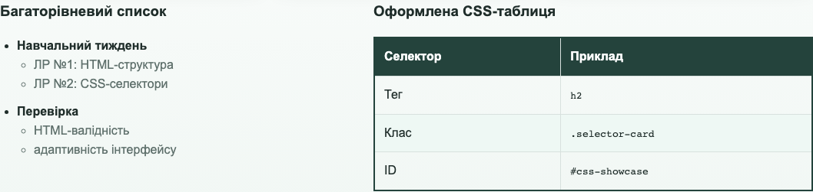
Для резюме створено окрему сторінку з власним CSS-файлом. Макет містить бічну панель з фото-зоною та контактами, основний блок з освітою, навчальними проєктами й описом CSS-оформлення.
<link rel="stylesheet" href="assets/resume.css">.resume-page {
display: grid;
grid-template-columns: 300px minmax(0, 1fr);
}
.resume-sidebar {
color: #ffffff;
background: var(--green);
}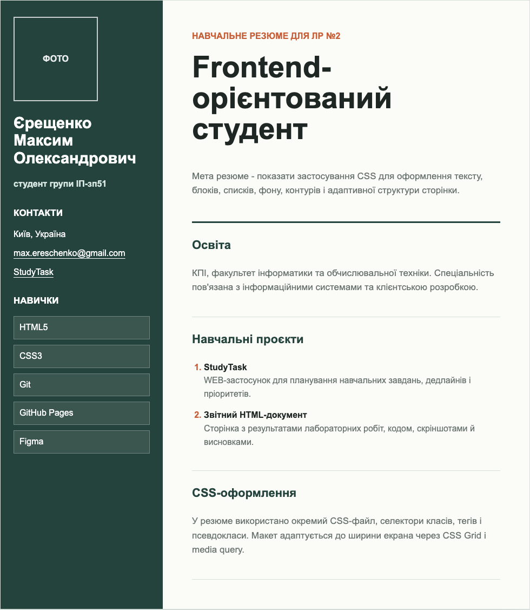
CSS використовується для опису зовнішнього вигляду HTML-документа: кольорів, шрифтів, відступів, розміщення блоків, адаптивності та станів елементів.
Основні методи: зовнішній CSS-файл через link, внутрішній блок style у head та inline-стилі через атрибут style.
Каскадування визначає, яке правило буде застосоване при конфлікті селекторів. Спадкування передає частину властивостей від батьківського елемента до дочірніх, наприклад колір тексту або шрифт.
Селектор тегу записується назвою елемента, наприклад button. Селектор класу починається з крапки, наприклад .selector-card.
Ідентифікатор задає унікальний елемент сторінки, може використовуватися для CSS-правил, JavaScript-звернень і як якір для навігації.
До оформлення тексту належать font-family, font-size, font-weight, line-height, color, text-transform, text-align.
У лабораторній роботі №2 застосовано каскадні таблиці стилів для оформлення WEB-застосунку StudyTask, звітного HTML-документа та сторінки резюме. Продемонстровано селектори тегу, класу, ідентифікатора, універсальний, дочірній, сусідній та атрибутний селектори. Також використано CSS-властивості для шрифтів, тексту, фону, контурів, таблиць, багаторівневих списків і адаптивного макета.
Тема: основи JavaScript у HTML-документі, шаблонні рядки, керування порядком обчислень, масиви, методи масивів і функції.
| Мета | Придбати практичні навички роботи з конструкціями мови JavaScript, масивами та функціями у JS-сценаріях. |
|---|---|
| WEB-застосунок | StudyTask: сторінка ЛР №4 JavaScript |
| Варіант | Робоче припущення: непарна колонка для задач №1-6 та №8, варіант 1 для задач №7 і №9. |
| GitHub/GitHub Pages | додати після публікації Віддалені репозиторії та live-посилання ще не створювалися. |
Умова: зберегти введене значення у змінну, вивести його у Console, перевірити знак числа та показати результат через alert().
function classifyNumber(value) {
const number = Number(value);
if (Number.isNaN(number)) return "Некоректне значення";
if (number > 0) return "Число додатнє";
if (number < 0) return "Число від'ємне";
return "Число дорівнює нулю";
}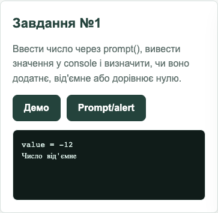
Умова: запитати число 1-4 і через switch-case визначити пору року.
function getSeason(number) {
switch (String(number).trim()) {
case "1": return "зима";
case "2": return "весна";
case "3": return "літо";
case "4": return "осінь";
default: return "невідоме значення";
}
}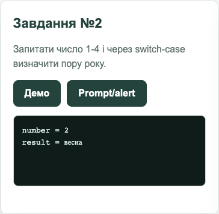
switch-case.Умова: перевірити логіни Admin/User та відповідні паролі, використати prompt(), alert() і console output.
const credentials = { Admin: "admin123", User: "user123" };
function authenticate(login, password) {
if (login === null || String(login).trim() === "") return "Cancelled";
const normalizedLogin = String(login).trim();
if (!Object.hasOwn(credentials, normalizedLogin)) return "I don't know you";
if (password === credentials[normalizedLogin]) return `Hello, ${normalizedLogin}`;
return "Wrong password";
}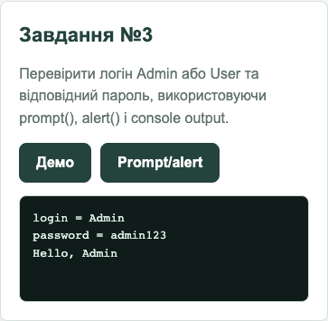
Умова: оголосити функцію для повідомлення про купівлю ремонтних дроїдів.
function makeTransaction(quantity, pricePerDroid) {
const totalPrice = quantity * pricePerDroid;
return `You ordered ${quantity} droids worth ${totalPrice} credits!`;
}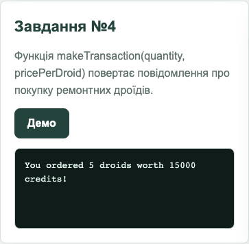
makeTransaction(5, 3000).Умова: перевірити рядок на слова spam і sale незалежно від регістру.
function checkForSpam(message) {
const normalized = String(message).toLowerCase();
return normalized.includes("spam") || normalized.includes("sale");
}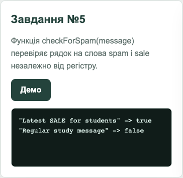
Умова: повернути новий масив лише з тих чисел, які більші за задане значення.
function filterArray(numbers, value) {
const filtered = [];
for (const number of numbers) {
if (number > value) filtered.push(number);
}
return filtered;
}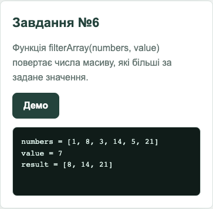
[1, 8, 3, 14, 5, 21] за значенням 7.Умова варіанта 1: створити масив, знайти максимальний серед парних елементів і мінімальний серед елементів з парними індексами, поміняти їх місцями, надрукувати масиви і виконати сортування вставкою.
function processVariantOneArray(numbers) {
const swapped = [...numbers];
const maxEvenIndex = findIndexOfMaxEvenValue(swapped);
const minEvenIndexIndex = findIndexOfMinEvenIndex(swapped);
[swapped[maxEvenIndex], swapped[minEvenIndexIndex]] =
[swapped[minEvenIndexIndex], swapped[maxEvenIndex]];
return { source: numbers, swapped, sorted: insertionSortAscending(swapped) };
}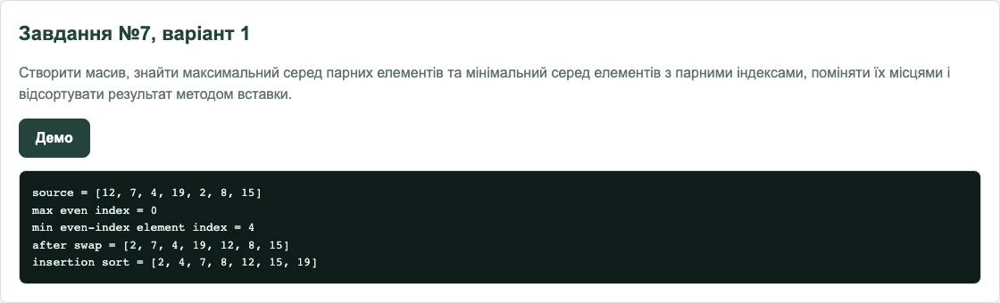
Умова: створити двовимірний масив додатних і від'ємних чисел, вивести його у Console, створити масив додатних і масив від'ємних чисел, третій елемент у додатному масиві замінити на від'ємне значення.
function splitMatrixNumbers(matrix, replacementValue) {
const flat = matrix.flat();
const positives = flat.filter((number) => number > 0);
const negatives = flat.filter((number) => number < 0);
const updatedPositives = [...positives];
updatedPositives[2] = Number(replacementValue);
return { matrix, positives, negatives, updatedPositives };
}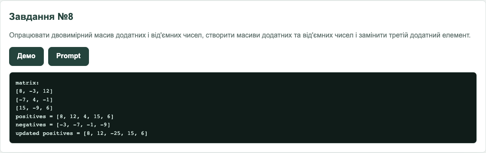
Умова варіанта 1: забезпечити перевірку цілого числа, дійсного числа, дати у форматі DD.MM.YYYY, однаковості паролів і обов'язкових полів.
function validateRegistrationForm(data) {
const errors = [];
if (!data.name.trim()) errors.push("Ім'я є обов'язковим полем");
if (!/^-?\d+$/.test(data.age)) errors.push("Ціле число має містити тільки цифри");
if (!/^-?\d+([.,]\d+)?$/.test(data.rating)) errors.push("Некоректне дійсне число");
if (!isValidDate(data.date)) errors.push("Некоректна дата");
if (data.password !== data.confirm) errors.push("Паролі не збігаються");
return { valid: errors.length === 0, errors };
}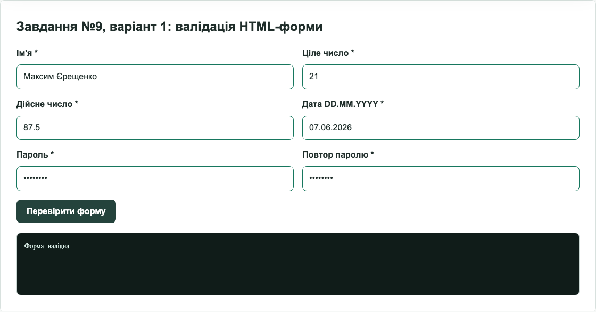
Кнопка "Запустити всі демо" на сторінці WEB-застосунку виконує всі задачі з фіксованими тестовими значеннями і дублює результат у браузерну Console та блок Console output.
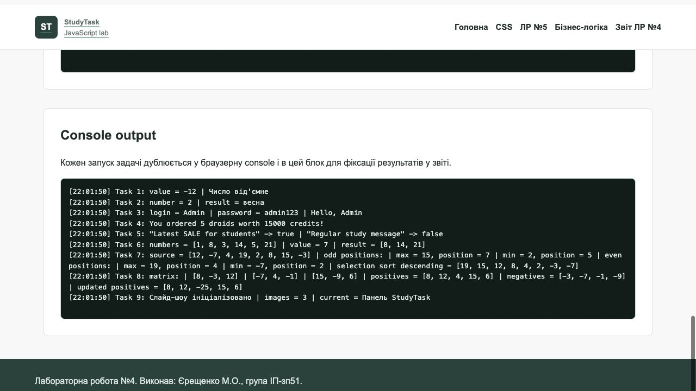
У лабораторній роботі №4 реалізовано задачі з основ JavaScript: використано prompt(), alert(), шаблонні рядки, switch-case, функції, одновимірні й двовимірні масиви, методи масивів, сортування вставкою та валідацію HTML-форми. Для перевірки створено окрему сторінку WEB-застосунку з кнопками запуску задач і console output.
Розділ буде заповнено після виконання відповідної лабораторної роботи.
Розділ буде заповнено після виконання відповідної лабораторної роботи.
Розділ буде заповнено після виконання відповідної лабораторної роботи.